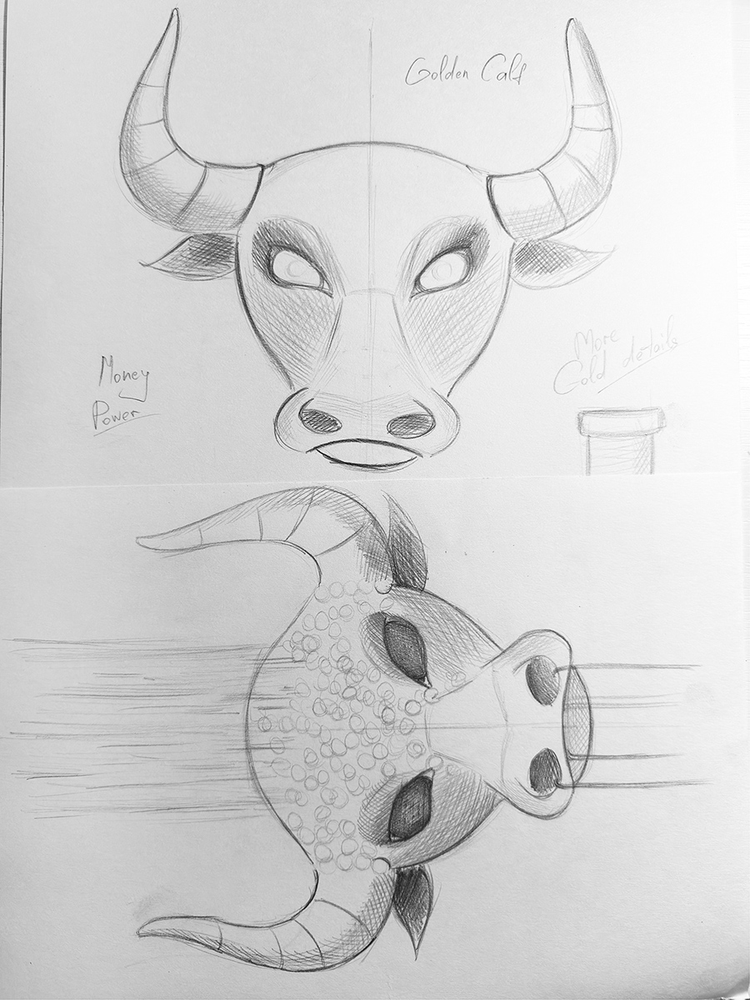
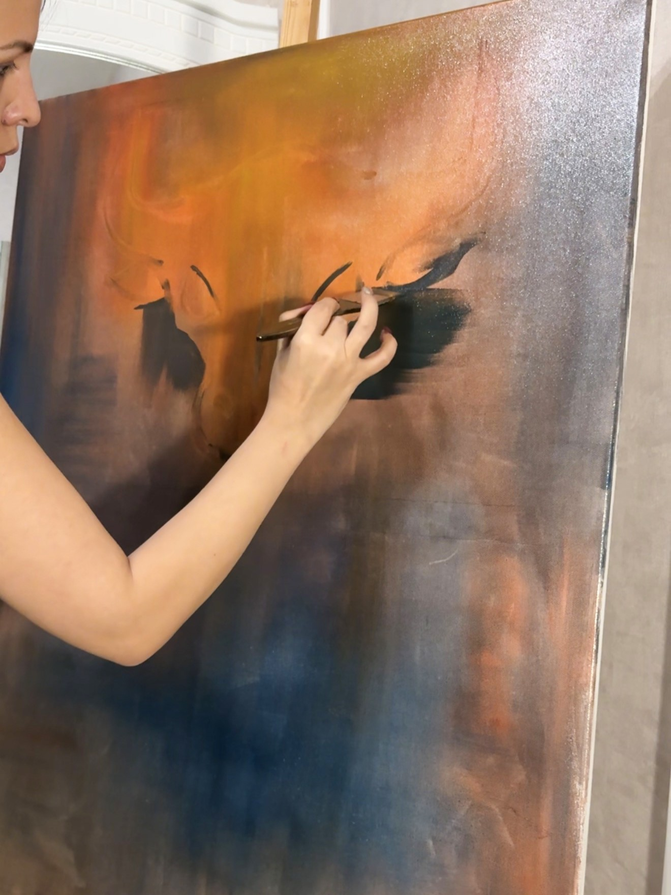
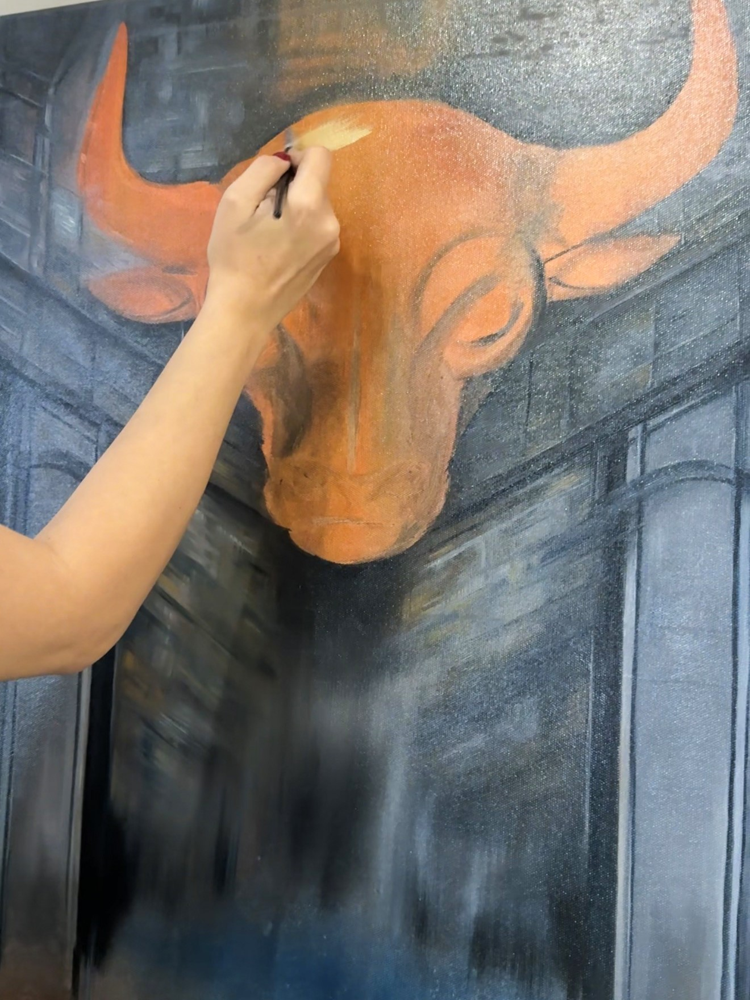
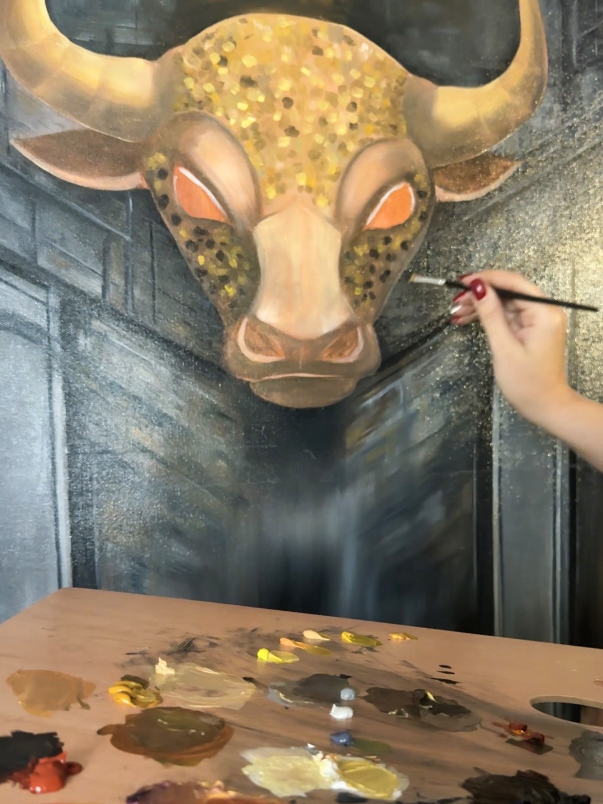
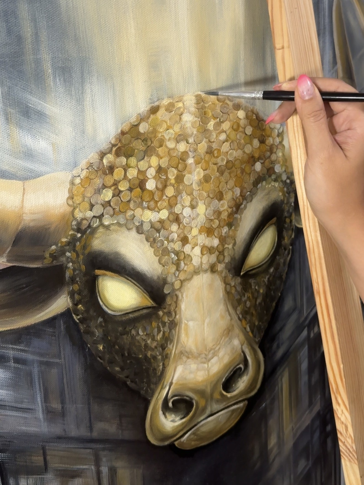
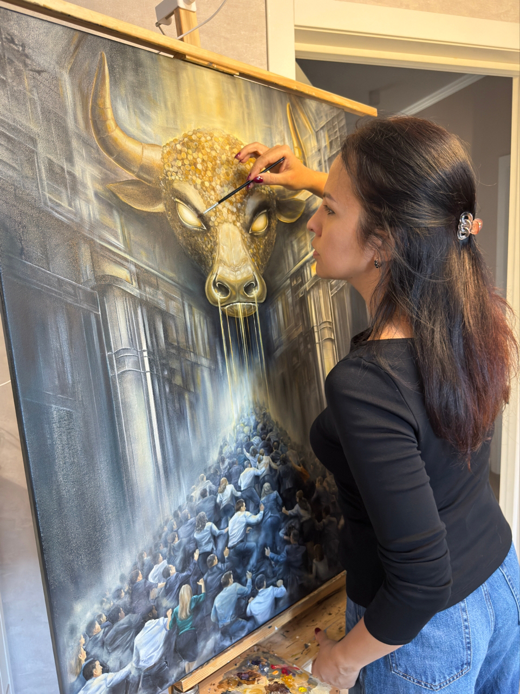
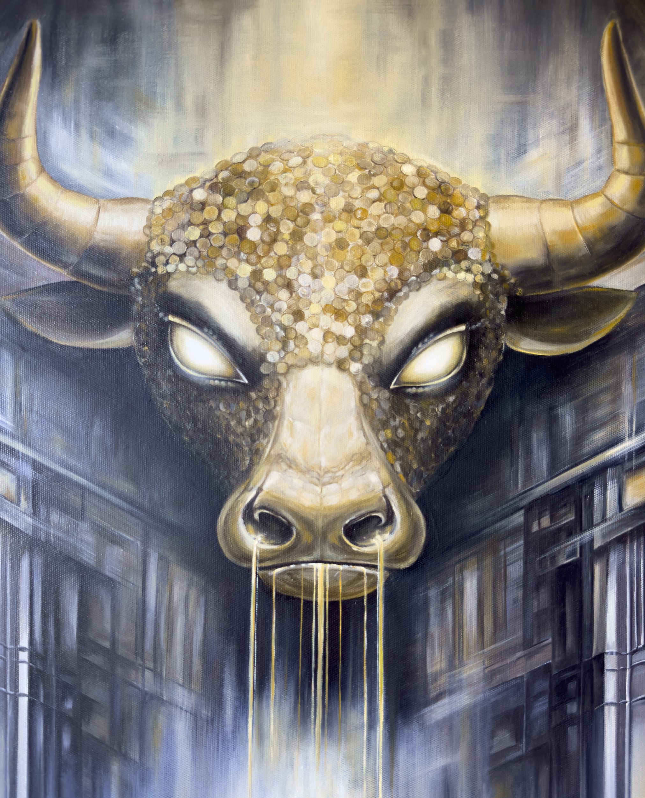

Behind the Painting
The first work in the series is The Golden Calf. Dominating the composition is a monumental bull — a symbol of money, power, and wealth embodied in a mythological creature. In my interpretation, however, it is not a living being, but a soulless system that has taken the form of an ancient symbol. Its eyes are empty, yet they emit a mystical glow that draws the viewer’s gaze.
In shaping the bull’s head, I sought to recreate the texture of gold, as though its surface were composed of gold coins. Its horns and nose are made of gold, while golden rivers pour from its nostrils in place of breath, promising extraordinary power to those who manage to reach this monument.
Around the bull stand structures and columns resembling a cage or an enclosed space with no way out. To me, this is a metaphor for the system into which a person is born and within which they follow a predetermined course, guided by an established programme. Over time, they may cease to recognise that this path is not necessarily one they have chosen for themselves.
In the lower part of the painting, I depicted a crowd striving towards the false light of the Golden Calf. All these people seek to reach the summit of wealth. Some seem unable to stop: in pursuit of an illusory goal, they lose their individuality. Some cover their faces with their hands; others are trampled underfoot and go unnoticed. Each figure embodies, in its own way, human fears, aspirations, and inner contradictions.
But what do these people truly sacrifice in pursuit of a dream, luxury, and a beautiful life? Some abandon their childhood dreams, some lose their freedom, while others continue climbing, literally walking over the heads of others. And so the central question emerges: what intangible price will each of them pay, and what will they receive in return?
I deliberately left the figures without eyes. To me, this symbolises blind devotion to an idea and the loss of the ability to see and understand what is happening around us. A person becomes so consumed by the pursuit of a goal that they stop noticing not only others, but themselves as well.
While working on this vast crowd, I felt deeply connected to each figure, as though I were standing before living people, each with their own emotions, anxieties, fears, and dreams. Transferring their images onto the canvas was emotionally difficult for me. Each time I raised my paintbrush to depict another figure, a face without eyes, or someone covering their face with their hands, I felt as though I were coming into contact with other people’s feelings and experiences. The people on the canvas ceased to be mere images — to me, they became alive. This was the most challenging part of the painting.
In my view, The Golden Calf symbolises a system that has endured for centuries.
The Painting Process
A glimpse into the creation of The Golden Calf — from the first layers of underpainting to the final details. Watch the painting gradually emerge through colour, texture, and light.
The Golden Calf — the finished painting on canvas.
From Sketch to Final Painting
A selection of moments from the creation of The Golden Calf, from the initial concept sketch to the final details of the oil painting.

01 — Initial Sketch
Developing the visual concept for The Golden Calf.

02 — The First Layers
Establishing the composition, colour, and atmosphere.

03 — Developing the Form
Building the bull’s form within the architectural setting.

04 — Building the Golden Surface
Layering gold tones and coin-like marks across the surface.

05 — Refining the Details
Refining the highlights, textures, and smaller details.

06 — Final Touches
Working on the final details of The Golden Calf.
Details of the Painting

The Golden Bull
The Crowd